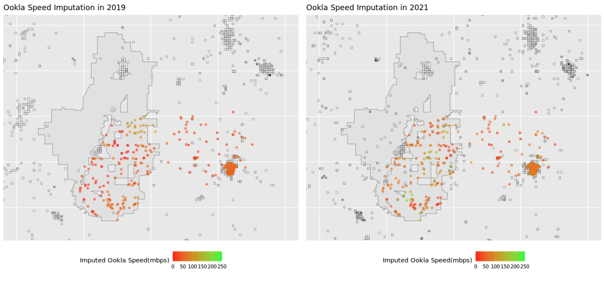

Impact of Rural Broadband Development Programs
Assessing the USDA ReConnect Program
Data Science for the Public Good Intern
Steve Zhou
Annie Xie
Sponsored by:
John Pender
Economic Research Service - U.S. Department of
Agriculture

The USDA ReConnect Program
- Three rounds of funding completed, with the fourth on-going
- 316 projects approved and $3.86 billion invested since 2019
Three primary goals of 2023 DSPG Summer Project:
1. Improve dataset quality at household level through geocoding and web scraping
2. Assess the impact of a completed ReConnect project on internet connection
3. Create a workflow that can be scaled nationally and reproduced for future projects
Methodology: Difference-in-Difference
Compare the internet speed of subscribers inside the project area (the treatment group) and comparable households around the project area (the control group) before and after project completion
(1) Challenge in matching treatment and control households
Solution: BlackKnight property dataset
(2) Challenge in determining internet speed
Solution: build a predictive model based on subscription data in 2021
Summary of datasets
| Dataset | Level | Key Contents | Year |
|---|---|---|---|
| BlackKnight Property Data | Household level | Housing characteristics (e.g. number of bedrooms), address, coordinates | 2021 |
| ReConnect Subscription Data | Household level | Subscription speed, address, coordinates | 2021 |
| Ookla Speed Test Data | 620m by 620m tiles | Average speed and number of tests within each tile, geometry of tiles | 2019 - 2022 |
| Federal Commission of Communication (FCC) Broadband Data | Census block level | Broadband providers, maximum advertised speed for each provider within each census block | 2019 - 2021 |
Geocoding Schema
Coordinates and addresses are key to linking different datasets and predicting internet speed

We experimented and evaluated three geocoding APIs
| API | Bing | Census | OpenStreetMap |
|---|---|---|---|
| Limit | 50,000 / day | 10,000 / batch | 1 / second |
| Speed | 0.2-0.25s / query | 0.01-0.02s / query | 1s / query |
| Match rate | 98% | 85% | 73% |
| Avg. Diff | 26m | 94m | 229m |
Ookla Imputation

Map of smoothed Ookla results for the sample
project. Greyscale squares are raw Ookla data, chromatic circles are
imputed results
Ookla provides data as the average speed testing result in a 600-by-600 meter tile.
We applied a Gaussian kernel to impute speed at each propery based on their lat-long.
A predictive model is estimated using the 2021 data of the ReConnect subscribers
\[ SubscriptionSpeed = \beta_0 + \beta_1ImputedOokla + \beta_2FCCMedAdSpeed + \vec{\beta_i}\vec{HousingFeatures} + e \]
Rural Buffer Zone

To ensure the ReConnect subscrbers (treatment group) are compared to similar communities, we choose the control group only from the project buffer zone, which is
- the surrounding area within 20 miles of the project
- belongs to a census tract that is rural, defined by
- a Rural Urban Commuting Area (RUCA) code at least 7
Matching treatment group and control group
We implemented a matching algorithm based on between subscriber and buffer-zone properties on number of bedrooms, number of bathrooms, building area, age of building, and 2021 assessed value. Each subscriber is matched to a property with the minimum Mahalanobis distance.
Here presents the difference-in-difference analysis results
\[ PredictedSpeed_{h,t} = \alpha + \beta treatment_h + \gamma year_t + \delta_{DD}treatment_h * year_t + e_{h,t} \]We have strong evidence to believe the implementation of the ReConnect project brings a statistically significant improvement to internet connection in the project area.
Future Steps
- Evaluate additional sources to supplement Ookla imputation, such as M-Lab.
- Explore solutions to systematic missing of property info in certain states.
- Reproduce the analysis as newly completed projects data becomes available.
Thanks for coming, and we are happy to take questions.
|
|
|
Program Contacts: Joel Thurston and Cesar Montalvo |
Social and Decision Analytics Division, University of Virginia
Josh Goldstein
Neil Kattampalil
Leonel Siwe